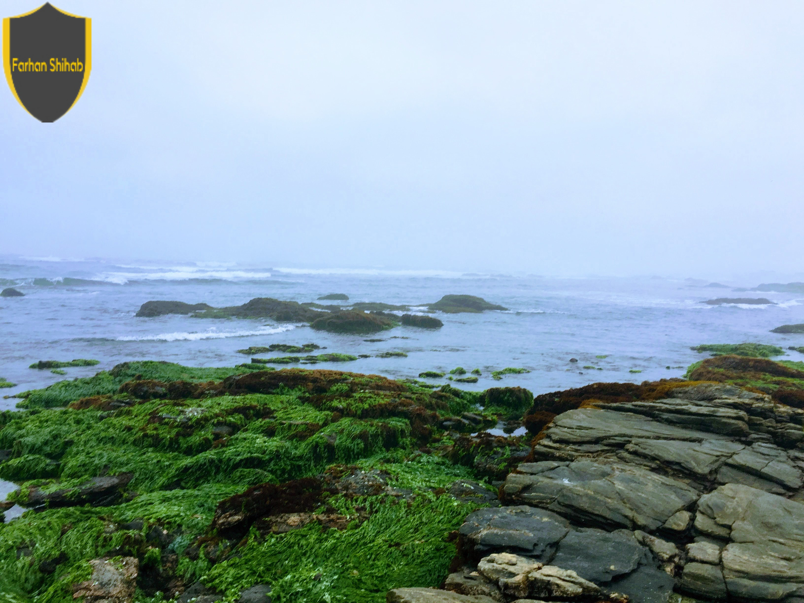

Tblisi,Gadauri in Georgia

Salalah, Oman

Delhi, India

Agra, India
I also visited Fatehpur Sikri which is a historic city built by Mughal Emperor Akbar. Here I walked by the beautiful palaces, coutyards and gardens and soaked in the architectural grandeur.